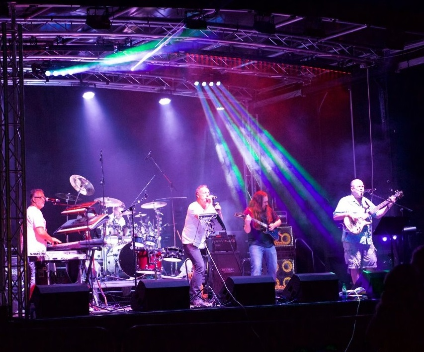

<div class="event-info">
	<div>
		<center>
			<picture>
				<source srcset="img/bands/6.webp" type="image/webp">
				<source srcset="img/bands/6.jpg" type="image/jpeg">
				
			</picture>
		</center>
		<br>
		<b><i>Rock, Rave and everything in between!</i></b>
		<br> Although formed almost 30 years ago, Charlies Aunt’s core 3 members have remained the same. However, with the introduction of a new lead singer, lead guitarist and several tons of lights approximately 5 years ago, the band have transformed into
		one of the most sought after covers bands on the circuit. Playing anything from Rock to Rave and blinding audiences with a light show that requires a special dispensation from The National Grid, the band put on a ”Show” rather than just a performance.<br>		As lovers of ale and members of CAMRA, Charlies Aunt are so pleased to be asked to play The Chelmsford Beer Festival.<br> One of our most often asked question is “How did you get the name?” As memory serves, we were once at a fine ale serving establishment
		being served by a equally fine and established barmaid when it was noted “Her Ale may be flat but her.........”
	</div>
</div>
